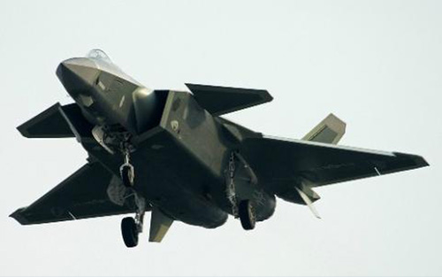
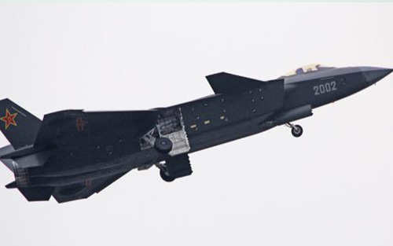

歼-20
试飞进程
2016年7月4日，网上出现新的歼20试飞照片，在新的照片中，飞机机身不再刷试飞编号，中国空军“八一”的标识也变成了灰色。
2016年8月25日，首架量产型歼-20A交付部队试用。歼-20也成为世界上第三种交付部队的第五代战斗机。
2016年10月，军事论坛出现歼-20的试飞照，可以看出，歼-20已换成双色斑块迷彩，极可能为量产型的涂装，并且两架歼-20一起试飞，显示试飞工作步入尾声，而且可能已经到了培训种子教官飞行员的阶段。
“歼-20”意味着什么？
有潜力完成中国空军以前无法完成的空战任务，整体提升中国空军实力。
歼-20 — 展示



